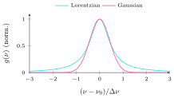
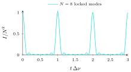

; mode-locking phases
; mode-locking phases  repeating every .
repeating every .Broadening mechanisms
- Natural: an upper level of lifetime
 gives a field , whose spectrum is Lorentzian of FWHM .
gives a field , whose spectrum is Lorentzian of FWHM . - Collisional (pressure): collisions interrupt the phase, shortening the effective : also Lorentzian, homogeneous.
- Doppler: thermal velocities shift each atom's frequency by : a Gaussian of FWHM , inhomogeneous (He–Ne).
- Crystal fields in glasses (Er:fibre) and alloy disorder: inhomogeneous.
In a homogeneous medium one mode saturates the whole gain curve and the others die (single mode is natural); in an inhomogeneous one each mode saturates only its own velocity class: a spectral hole of homogeneous width, and several modes coexist.
Picture: line shapes of equal FWHM

Q-switching
Keep the cavity loss high (Pockels cell plus polariser, acousto-optic modulator, or saturable absorber) while the pump builds an inversion far above normal threshold; then switch the loss low (McClung and Hellwarth 1962). Gain greatly exceeds loss, photons build up in a few round trips and dump the stored energy in a pulse of a few cavity lifetimes (ns). Energy ; peak power .
Mode-locking (derivation)
 modes of equal amplitude, spacing , locked in phase: , a geometric sum, gives (Hargrove et al. 1964)
modes of equal amplitude, spacing , locked in phase: , a geometric sum, gives (Hargrove et al. 1964)
for random phases) every , width . The broader the gain, the shorter the pulse.

Worked examples
- Natural width: ns → 16 MHz; He–Ne Doppler width 1.5 GHz is 100× larger.
- Q-switched Nd:YAG: 100 mJ in 10 ns → 10 MW peak, from a laser averaging 1 W at 10 Hz.
- Ti:sapphire: 30 nm bandwidth at 800 nm → THz; transform limit for Gaussian pulses → 31 fs. Cavity 1.5 m → 100 MHz repetition.
- Mode-locked He–Ne (if it were): 1.5 GHz gain → pulses ≈ 0.66 ns: gas lasers are poor at ultrafast pulses.
Engineering applications
Q-switched lasers: marking, LiDAR ranging, tattoo removal, pumping nonlinear crystals. Mode-locked lasers: femtosecond micromachining, multiphoton microscopy, frequency combs (Nobel 2005) for optical clocks, eye surgery (LASIK flap). Semiconductor lasers make short pulses by gain switching and are mode-locked in monolithic cavities for optical clocks in datacom.
Exam-style exercise
An Nd:YAG laser has gain bandwidth 120 GHz, cavity 1.5 m () and 1 W average output when mode-locked. (a) Mode spacing and number of modes. (b) Pulse width and period. (c) Energy and peak power per pulse.
Solution
(a) MHz, . (b) GHz ps; ns. (c) nJ; kW (1200× the average, the duty-cycle inverse).
Pitfall
Mode-locking is not "more modes": a free-running multimode laser has the same modes with random phases, giving noisy CW output of average power ; locking only redistributes that power into short pulses.